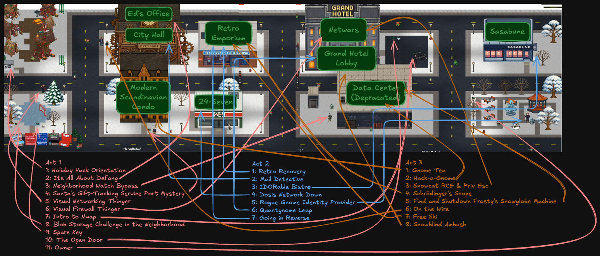
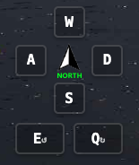
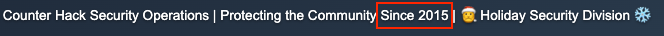
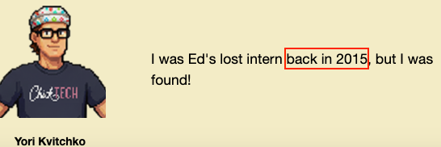
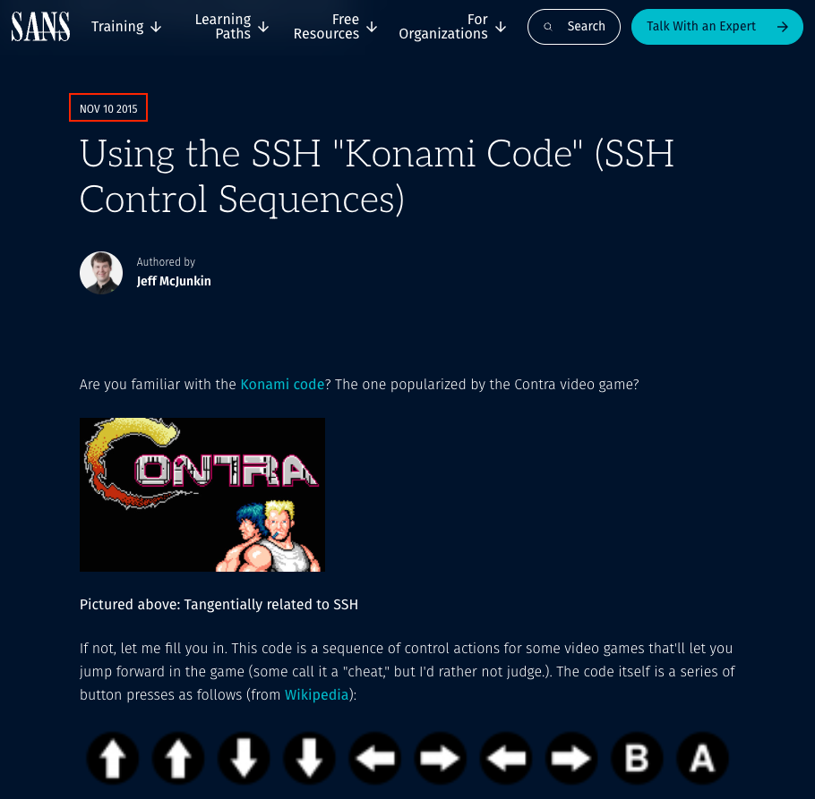

2025 SANS Holiday Hack Challenge Write-up
Welcome to my writeup of the 2025 SANS Holiday Hack Challenge. To keep the content organized and accessible, I've structured beginner-friendly notes and supplementary information in collapsible sections. I put the challenge descriptions and official hints at the bottom for reference. Refer to the challenge map below to locate each challenge's position in the game world.

A Huge Thanks
Each year, I look forward to participating in the SANS Holiday Hack Challenge and sharing my insights with the community. A big thank you to the organizers, creators, sponsors, and fellow participants who make this event both challenging and enjoyable. It is the best gift of the season!
Navigation Guide: Map Rotation Controls
The 2025 Holiday Hack Challenge features a new dynamic map rotation system that allows you to view the
game world from multiple angles. This is needed for locating challenges and secret areas obscured
by buildings and structures.
Use the Q key to rotate counter-clockwise and the E key to rotate
clockwise. Always reference the north arrow indicator to maintain your sense of direction while
exploring.

Technical Deep Dives & Reference
Detailed protocol specifications and methodology notes for the curious.
SANS Holiday Hack Challenge 2025: A Decade of In-Game Worlds
According to Ed Skoudis, while the SANS Holiday Hack Challenge has been running for 22 years, 2025 marks the 10th anniversary of the "in-game world" format where players use avatars to explore. To celebrate this milestone, the 2025 challenge, titled "Revenge of the Gnomes," serves as a direct sequel to the 2015 "Gnome in Your Home" storyline. In the original 2015 plot, millions of innocent-looking gnomes were actually malicious IoT devices using cameras to spy on families for burglars. For the 2025 sequel, those same gnomes, having gathered dust in attics and basements for a decade, have mysteriously come to life. Players must now figure out the nature of their new nefarious plot and identify who is controlling them as they run amok across town.
References to the 10-year anniversary from the game:
- Its All About Defang

- Gift-Tracking Port Mystery

- Find & Shutdown Snowglobe

- IDORable Bistro (The Sasabune restaurant) also was in the 2015 SANS HHC